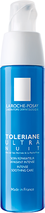

НЕЙРОСЕНСИН
НИАЦИНАМИД
НИАЦИНАМИД
ВИТАМИН Е +
КАРНОЗИН
КАРНОЗИН
НИАЦИНАМИД
ТЕРМАЛЬНАЯ ВОДА
LA ROCHE-POSAY
LA ROCHE-POSAY
ПРОТИВОВОСПАЛИТЕЛЬНОЕ
и ПРОТИВОЗУДНОЕ ДЕЙСТВИя
и ПРОТИВОЗУДНОЕ ДЕЙСТВИя
АНТИОКСИДАНТНОЕ
ДЕЙСТВИЕ
ДЕЙСТВИЕ
УКРЕПЛЯЮЩЕЕ
ГИДРОЛИПИДНЫЙ БАРЬЕР
ГИДРОЛИПИДНЫЙ БАРЬЕР
УСПОКАИВАЮЩЕЕ
И УВЛАЖНЯЮЩЕЕ ДЕЙСТВИя
И УВЛАЖНЯЮЩЕЕ ДЕЙСТВИя
ОЩУЩЕНИЕ
ПОКАЛЫВАНИЯ
ПОКАЛЫВАНИЯ
Т0
6.2
Т28
6.2
ЭРИТЕМА
Т0
2.3
Т28
2.3
ЗУД
Т0
3.3
Т28
3.3
ЧУВСТВО
СТЯНУТОСТИ
СТЯНУТОСТИ
Т0
2.9
Т28
2.9
Ощущение
жжения
жжения
Т0
1.4
Т28
1.4
Протокол
55 женщин
возраст от 23 до 61 лет, с чувствительной и склонной к аллергическим реакциям кожей
применение TOLERIANE ULTRA НОЧНОЙ вечером,
в течение 4-х недель
клиническая оценка дерматологом (stinging test)
тест самооценки пациентами